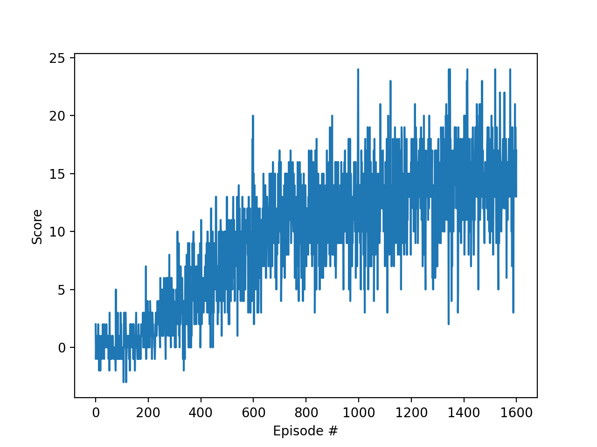

How an agent learns to want the yellow bananas.
How do you teach a computer to play a game when you are not allowed to tell it the rules? You cannot hand it a strategy guide. All you can do is let it flail around, keep score, and hope it notices what worked. That sounds stupid. It works embarrassingly well.
A while back I trained an agent to collect bananas in a Unity ML-Agents arena. My Value-based-methods repo has the whole thing. The rules are dead simple: the agent looks at the world, picks one of four moves (forward, back, left, right), and gets +1 for a yellow banana and -1 for a blue one. Yellow good, blue bad. That is the entire game, and the agent starts out knowing none of it.
Here is the game, exactly as my agent saw it. The banana arena is the running example for this whole series, so if the yellow-versus-blue thing feels familiar, that is on purpose.
The world is a square room in Unity ML-Agents, scattered with yellow bananas and blue bananas. The agent spawns at a random spot. Every step it picks one of four moves: forward, back, left, right. Touch a yellow banana and it scores +1. Touch a blue one and it is -1. A fixed clock runs down, the episode ends, and the score is just the total: yellows minus blues, added up over the whole episode. The score is really a rate: how many more yellows than blues can you grab before the clock runs out.
What the agent sees is nothing like bananas. It sees 37 numbers. Some are its own velocity, how fast it is moving and in which direction. The rest come from a fan of ray-cast sensors, the ML-Agents banana collector's version of a cheap lidar: each ray reports how far away something is and which tagged object it hit. Yellow bananas, blue bananas, and walls carry different tags, so a ray tells a yellow from a blue by tag, not by sight. No pixels, no camera, no map. Thirty-seven numbers, refreshed every step, and that thin little stream is the entire input to the neural network. Four numbers come out, one Q-value per move, and the agent takes the biggest.
Read that again slowly, because it is the strangest part of the whole story. The agent never sees a banana. It sees numbers that correlate with bananas, and the network has to discover the correlation from scratch. "A yellow tag ahead plus move forward equals +1 later" is not given; it is learned, one nudge at a time, until the numbers that mean "banana ahead" reliably produce the move that collects it. Wanting the yellow bananas is not programmed in. It is a pattern in 37 numbers that survived a million nudges.
And the finish line is a number, not a feeling. My README says the run's curve exceeds 14: the agent finds yellows much faster than it blunders into blues, and holds it episode after episode. The code's early-stop bar was 17.0, which the run never hit, so all 1,600 episodes ran, up to a thousand steps each, topping out near 1.6 million steps. Everything on this page is about how a pile of random guesses climbs to that bar.
One step of the game, in slow motion. The agent reads its 37 numbers. The network turns them into 4 Q-values. The agent rolls the epsilon dice: random move, or the current best. It moves. The world answers: +1, -1, or nothing. The step gets written into the diary. Repeat up to a thousand times and the clock runs out; the episode score is the sum. Then the agent respawns, epsilon ticks down a hair, and it all starts again. That loop, run sixteen hundred times, is the entire training run. There is no coach, no demonstration, no labeled data. Just the loop.
This game is the perfect first RL problem for three reasons. The moves are a finite menu, so argmax always has something to grab. The reward is immediate and unambiguous, +1 or -1 the instant you touch something. And episodes are short, so the agent gets sixteen hundred fresh starts instead of one long confusing life. Every harder problem in this series is this game with one of those comforts removed.
You met Q-values on the intro page: one number for every situation-move pair, the remembered score of trying that move there. And you met the update that fills them in. Here it is again as a recap, not a re-derivation:
In words: nudge the old guess toward what just happened plus the discounted best guess about what comes next. The full term-by-term walk and the worked arithmetic, 0.50 to 0.629 on one banana, are on the intro page if you want them again. Notice what the policy is, by the way: there is not one. The whole "brain" is the scoreboard plus one line, take the max. The Q-values ARE the strategy.
Why a scoreboard and not a rulebook? Because nobody can write the rulebook. "If yellow is ahead-left and you are moving fast, turn slightly right" does not survive contact with 37 continuous numbers. The scoreboard never tries to be clever. It just remembers, for every situation it has survived, which move paid off. Cleverness is what falls out after a million reminders.
The entire brain, minus the neural net, fits in six lines:
# epsilon-greedy: mostly smart, sometimes random
if random.random() < epsilon:
action = random.choice([0, 1, 2, 3])
else:
action = argmax(Q[state]) # argmax: the move with the biggest Q-value
# the Q-update: one nudge toward reality
Q[s][a] += lr * (reward + gamma * max(Q[s_next]) - Q[s][a])
Everything above is Q-learning from the eighties: a scoreboard you can store, a one-line update, take the max. It works beautifully, until the situations become infinite. The banana agent cannot store a scoreboard. Its "situation" is 37 continuous numbers, and there are infinitely many possible 37-number vectors, so a lookup table with a row per situation is a non-starter. The deep in Deep Q-Networks is one substitution: the scoreboard becomes a neural network. Thirty-seven numbers in, four Q-values out, one per move. Same update rule, same take-the-max, just a network doing the remembering instead of a table doing the looking up.
And that substitution nearly broke the whole thing, twice. Two fixes saved it, and both are sitting in my repo. Before the fixes, one more thing the substitution buys you, because it is the reason anyone bothers: generalization. A table only knows the exact situations it has visited. A network guesses values for situations it has never seen, by analogy with the ones it has. That is the superpower, a banana two steps to the left of any banana ever seen still reads as "banana ahead", and it is also the danger, because a confident wrong guess in a new corner can send the agent somewhere stupid. Both fixes below are really about keeping that guessing honest.
The first is experience replay, and the file is literally called replay.py. Training a network on consecutive steps is like studying for an exam by rereading the same page fifty times in a row. Step 412 looks almost exactly like step 413: same corner of the room, same bananas nearby, same velocity. Feed those to a network one after another and it overfits to right now. It learns this corner brilliantly and forgets the rest of the arena. The fix is a diary. Every step gets written down as a little tuple: what I saw (37 numbers), what I did (one of 4 moves), what I got (+1, -1, or 0), what I saw next (37 more numbers). My replay.py keeps the last 100,000 of these. Then, each training step, the agent does not train on the latest step. It closes its eyes, opens the diary at a random page, and trains on a random handful of 64 old memories. Consecutive steps lie to the network by being too similar to each other. Random old steps tell the truth about the whole game. Hence the classic beginner bug: training on every step once, in time order, and wondering why the agent is a genius in one corner and an idiot everywhere else.
The second fix is the target network, and it fixes something sneakier. Look at the update rule again: the target you nudge toward is built from the max Q of the next state, computed by the same network you are changing. Every gradient step moves the guess and the target at the same time. That is grading your own exam while you are still writing it. The number you are aiming for slides around as you reach for it, and learning wobbles or diverges. The fix is a frozen twin. You keep a second copy of the network, compute all your targets from the copy, and only sync the copy toward the live network every so often, a little at a time. The target holds still long enough to actually learn toward. Stable target, stable learning. My agent.py does the soft version: each update nudges the twin a tiny fraction toward the live weights instead of copying them wholesale.
Two details worth knowing, since they are the kind of thing that bites in practice. First, the diary has a fixed size: when it is full, the oldest memory gets thrown out to make room. A diary that only remembers yesterday teaches yesterday's game, so 100,000 steps is big enough to hold many eras of the agent's life at once. Chaos-era flailing sits next to competent-era banana runs in the same random batch, and the network learns the whole game instead of just the latest mood. Second, the batch is 64, not 1 and not 10,000. One memory is too noisy to learn from; ten thousand is a semester of homework per step. Sixty-four is the compromise the whole field settled on: enough variety to be honest, cheap enough to do every step.
And beginners always ask why the twin cannot just be synced every step like everything else. It can, and then it is not a twin anymore, it is the same network wearing a fake mustache, and the target starts sliding again. The whole point is the delay. The live network sprints, the twin strolls, and the targets stay put long enough to be worth learning toward.
That is the whole deep part: a network for a scoreboard, a diary to break the correlations, and a frozen twin to stop the target from running away. Everything else on this page, epsilon included, is the same idea Q-learning always had.
There is a catch, and it is the cleverest part. If the agent always picks its best-known move, it never tries anything new, and the scoreboard freezes on whatever luck it stumbled into first. So it plays dumb on purpose. Most of the time it picks the best move it knows. But with probability epsilon, it picks a completely random move, just to see what happens.
Epsilon starts at 1.0, total chaos, and decays toward 0.01 as the agent gets confident. Early on it needs the chaos to discover anything. Late in training the chaos would just be vandalism. Hence the classic beginner mistake: setting epsilon to zero from the start. Your agent will confidently march into the first blue banana it finds and never learn any better, because it never looks anywhere else.
The decay schedule is where the personality of the training lives. Epsilon starts at 1.0, every move random, and after each episode it multiplies by 0.998. That number looks like it does nothing, and that is deliberate. After 500 episodes epsilon is still about 0.37. After 1,000 episodes it is about 0.135, roughly one random move in seven. The agent is still seriously exploring a thousand episodes in, because the arena is big and early confidence is a liar. It only settles at the 0.01 floor, one random move in a hundred, once the Q-values have actually earned the agent's trust. Decay too fast and the agent locks in the first decent corner it finds and calls it a strategy. Never decay at all and you get an agent that learns the whole game and refuses to use any of it. There is a tool for that one below, and it is my favorite on this page.
There is a subtle reason any of this works, and it is worth saying out loud: Q-learning is off-policy. The update learns the value of the BEST move from the next state, even if the move the agent actually took was random. So every chaotic flail is still useful data. The agent can spend an entire episode doing everything wrong and still come home with a slightly better scoreboard, because the update rule asks "what was the best thing I could have done" rather than "how was the thing I did". Exploration is never wasted. That is the deep justification for the whole epsilon idea, and it is also why the chaos agent in the tool below learns a perfectly good scoreboard it never uses.
One more question beginners always ask: why does epsilon bottom out at 0.01 instead of going to zero? In a fixed arena, zero would be fine once the table converges. But 0.01 costs almost nothing, one random move in a hundred, and it buys insurance. If some Q-value settled wrong early and never got revisited, that trickle of randomness is the only thing that will ever correct it. Total greed is brittle. A one-percent humility keeps the agent honest.
So what does the whole run actually look like, from the agent's side? It has four eras, and you can map every curve on this page onto them.
Era one is total chaos. Epsilon is near 1.0, so every move is random. The agent ricochets around the room eating blue bananas at random, scores hover near zero or below, and the diary fills up with garbage. Nothing has been learned. This era feels broken and it is supposed to. The garbage in the diary is the point: without a few hundred episodes of flailing, the random memory samples would have nothing to sample from.
Era two is when the scoreboard starts separating. The first thing the Q-values learn is fear: the value of "blue banana dead ahead" goes negative long before anything goes confidently positive. Pain teaches faster than pleasure, because -1 is a sharp unambiguous lesson and the network latches onto it. The agent starts flinching away from blue before it can reliably chase yellow. Scores are still bad, but the mistakes get less random. If you have ever watched a training curve sit flat for ages and then twitch upward, that twitch is usually era two: the agent has learned what NOT to do.
Era three is the middle stretch, epsilon somewhere around 0.3 to 0.5. Now there are enough greedy moves in a row to string together actual banana runs, and still enough randomness to keep discovering new corners of the room. This is where the score climbs, noisily, two steps forward and one step back. If you could watch the scoreboard heat up, this is the era where the yellow cells glow and the blue cells go cold. The diary is doing its quiet work here too: every random sample is now drawn from a mix of chaos-era garbage and competent-era runs, so the network learns the whole game instead of just the latest mood.
Era four is the payoff. Epsilon is down near 0.01. The scoreboard has converged, the frozen twin did its job, the diary did its job. The agent beelines for yellow, dodges blue on purpose, and the average score climbs past 14 and stays there. Solved, by my README's number. Not perfect. The agent still eats a blue banana sometimes when a yellow is sitting right behind it. But consistent: fourteen and up, episode after episode.
That arc, chaos to fear to the middle stretch to the payoff, is what "DQN solves it" actually means. It is not one clever update. It is over a million dumb updates, aimed by two tricks and a decay schedule, until wanting the yellow bananas is just what the numbers say.
A confession about the word "solved". Fourteen is not the agent playing perfectly. Watch the trained agent for a while and you will catch it eating a blue banana because a yellow was sitting right behind it, or taking a scenic route for no reason. "Solved" is a line in the sand my README drew: the curve exceeds 14, no cherry-picking. And the network is a pessimist before it is an optimist: it learns what to fear long before it learns what to want, because -1 is a louder teacher than +1.
This toy re-enacts my agent's brain at toy scale: the same epsilon idea, the same +1/-1 bananas, a tiny 6 by 6 world instead of the real arena. One detail the toy keeps honest: the state is the agent's square PLUS which yellows are still out. Without that, the scoreboard could not tell "yellow ahead" from "already eaten", and it would learn mush. The honest numbers are under the tool. Then, below it, a second tool isolates the one variable that matters most: the epsilon schedule.
Toy versus real: toy learning rate 0.3, toy gamma 0.9, and toy epsilon decay 0.99 per episode, so you can watch it learn in seconds. My network used lr 5e-4, gamma 0.99, and decay 0.998 over sixteen hundred episodes. The +1/-1 rewards and 4 moves are the real ones from my agent.py.
Here is the decay schedule with the training wheels off. Two identical agents, two identical tiny worlds, the same learning rule. One difference: the left agent's epsilon is pinned at 1.0 forever, and the right agent's decays toward 0.01. The race below shows what the schedule is actually for: chaos that never learns, against chaos that grows up.
Watch the left grid closely, because it holds the twist. The chaos agent's scoreboard heats up too. Q-learning is off-policy, so it learns the value of the best move even from random flailing. The left agent learns the whole game and then, episode after episode, refuses to use any of it. Knowing what to do turns out to be worthless if you never do it. That is the entire argument for the decay schedule, in one picture.
What is toy and what is real: toy world, toy numbers. 5 by 5 grid, lr 0.3, gamma 0.9, and the right agent's decay defaults to 0.97 per episode so the race finishes in about twelve seconds. My agent.py used lr 5e-4, gamma 0.99, and decay 0.998 over sixteen hundred episodes. The +1/-1 rewards, the 4 moves, and the epsilon 1.0 to 0.01 schedule are the real ones.
One footnote so nobody can accuse me of oversimplifying: the network in my repo is actually a Dueling Double DQN. The Q-network splits into two streams, one guessing how good the situation is and one guessing how much better each move is than average, then adds them back together. The "double" half deserves one sentence too: in vanilla DQN the same network both picks the best next move and judges how good it is, which makes every Q-value a little too optimistic, because the network keeps picking its own favorite move and then believing its own hype. Double DQN splits the jobs across the live network and the frozen twin: one picks, the other judges. The hype mostly goes away. Fancy plumbing, same idea: learn how good each move is, pick the biggest number.
Here is what the actual training looked like. Not a clean textbook curve, a real one, all noise and plateaus. If you squint you can see the four eras from the learning arc in there: the flat chaos at the start, the twitch upward when fear arrives, the noisy climb, the plateau at the end.
How to read it. The x-axis is episodes, zero to sixteen hundred. The y-axis is score per episode, and the blue scribble is every single episode, raw, no smoothing. The first two hundred episodes sit near zero: that is era one, total chaos. Then the band starts climbing in fits through episodes 400 to 800. Somewhere past episode 1000 the dense part of the band parks itself above 14 and stays there: solved, by my README's number. And look at the vertical spread even at the end: individual episodes still dip to 5 or spike past 20. A solved agent still has bad episodes, because epsilon never quite hits zero and bananas spawn in awkward places. If your own training curves look like this, messy with a rising band, that is not a problem. That is what working looks like.

Training curve from my DQN banana run (my Value-based-methods repo). Noisy, like all real training curves. The run's curve sits above 14, my README's number.
And here is the trained agent doing its thing:
My trained DQN agent collecting bananas in the Unity ML-Agents arena (same clip as the RL overview page).
What to watch for in the clip. The agent does not wander. It picks a direction and commits, beelining for the nearest yellow, and when a blue drifts into its path it curves around it without slowing down. That curve is era four made visible: the Q-values for "blue ahead" went negative thousands of episodes ago, and now avoidance is just what the numbers say. Every confident swerve in that clip was once a random flail that got punished.
DQN has one load-bearing assumption, and this whole page has been leaning on it: the moves come as a finite menu. Four buttons, four Q-values, take the max, done. Argmax is the entire decision procedure.
Now take the menu away. Imagine the move is not a button but a dial: how hard to push, anywhere from 0.0 to 1.0, with infinite settings in between. There is nothing to take the max over. You cannot score every possible move, because there are infinitely many of them, and "just check all the Q-values" stops making sense. The network has to output the move directly instead of scoring a menu: a policy instead of a scoreboard.
That is a different machine with different math, and it is the next page. Spoiler for the shape of it: you keep the scoreboard idea, but you add a second network whose whole job is to output the move. One network proposes, the other judges. The menu is gone, but the learning is not.